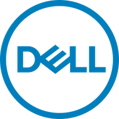
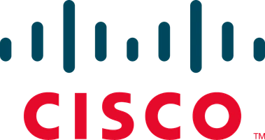

Partners · Afghanistan
NETLINKS Afghanistan is the authorized partner of Oracle, Dell, Cisco, Odoo, Sophos, Symantec in country. We sell, deploy, and support these platforms with engineering teams based in Kabul, so procurement, licensing, warranty, and on-site service all run locally.


HARDWARE & INFRASTRUCTURE
FILD DISTRIUTION PARTNER
NETLINKS Afghanistan is an authorized Oracle Field Distribution Partner, selling, deploying, and supporting Oracle Engineered Systems, Oracle Database, and Oracle Cloud Infrastructure for clients across Afghanistan.

Authorized Dell partner in Afghanistan. NETLINKS delivers Dell servers, storage, workstations, and laptops with warranty support, on-site engineering, and procurement for government, financial-services, and enterprise customers in Kabul and beyond.

Cisco partner for enterprise networking, security, and collaboration in Afghanistan. We design, deploy, and support Cisco network infrastructure, from branch switching to data-center fabrics, backed by Cisco-certified engineers based in Kabul.
Certified Odoo partner, the team that
delivered the 500,000-employee national-government
Odoo HR and payroll engagement. We implement,
finance, HR, manufacturing, retail, and
public-sector use cases.
Sophos partner for endpoint protection,
firewalls, and managed detection and
response. NETLINKS deploys and operates
Sophos security for Afghan enterprises,
financial institutions, and aid-sector
organizations needing audit-ready
security posture.
Symantec / Broadcom security
partner, endpoint protection,
encryption, and data-loss prevention
deployments for organizations that
need enterprise-grade security with
local Kabul-based engineering support.
Quotes, deployments, and ongoing support for any of the six platforms above.
Tell us what you're procuring,
s we'll come back with pricing, lead time,
and a deployment plan.